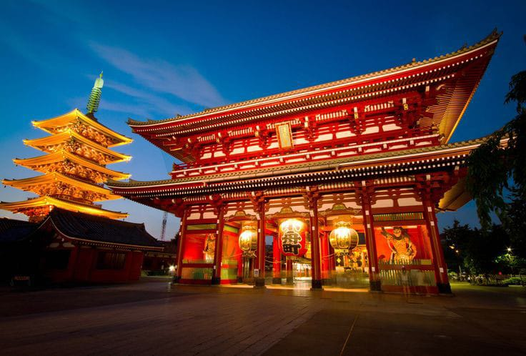

Sensoji

Sensoji adalah kuil Buddha yang terletak di Asakusa, Tokyo, Jepang. Ini adalah kuil tertua dan paling terkenal di Tokyo, dengan sejarah yang berawal dari tahun 645. Sensoji didedikasikan untuk Kannon, dewi Buddha belas kasihan.
Sensoji salah satu tempat wisata paling populer di Tokyo, menarik jutaan pengunjung setiap tahun. Kuil ini terdiri dari dua gerbang utama, Kaminarimon dan Hozomon, dan jalan Nakamise-dori yang ramai, yang dipenuhi dengan toko-toko yang menjual suvenir dan makanan. Di dalam kuil, terdapat patung Kannon yang terbuat dari kayu.